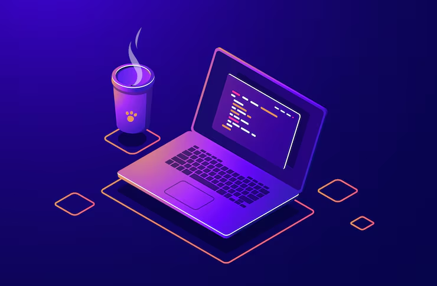
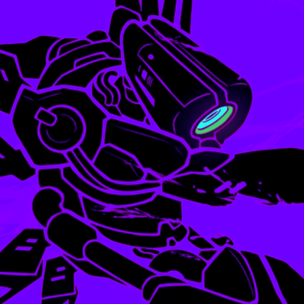
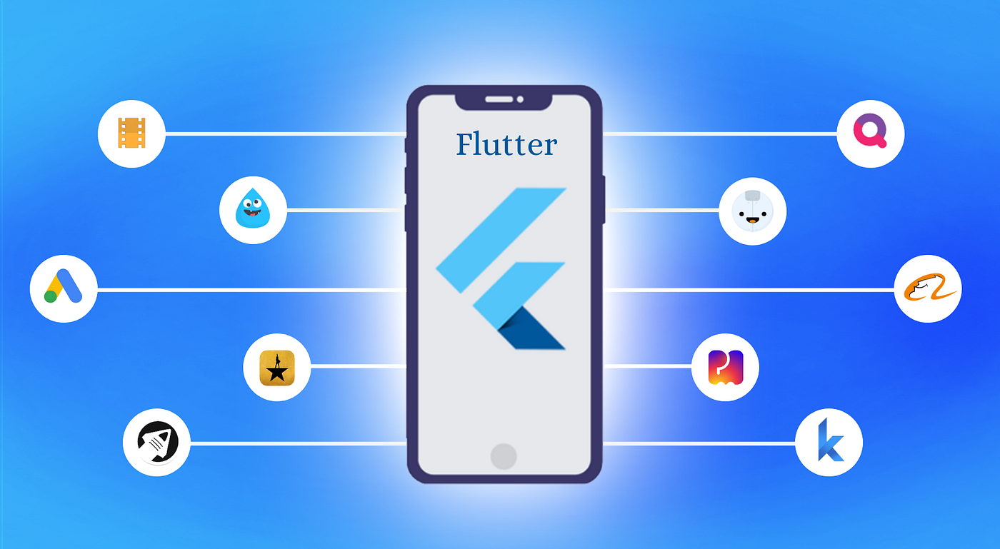
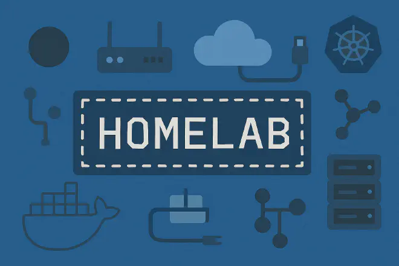
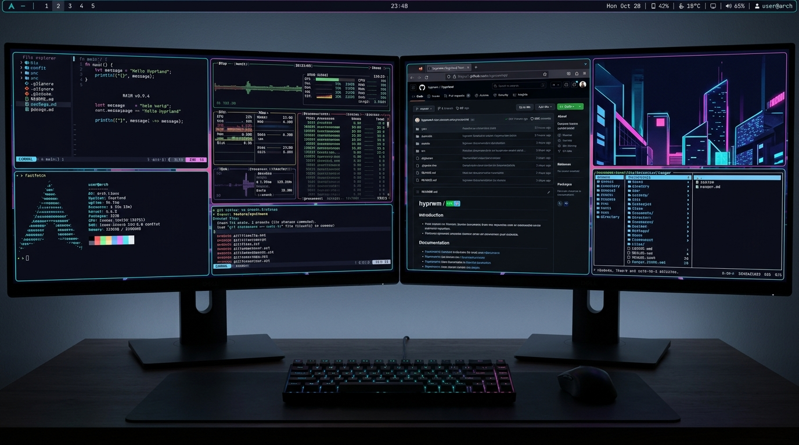

Hi! I'm Skalin
Fullstack & Systems Engineer
Building real-time web systems, high-concurrency applications, and self-hosted infrastructure.
About Me
My Background, Education & Engineering Focus
João Cruz (Skalin)
Fullstack & Systems Software Engineer
Hi, I'm João Cruz (Skalin), a Fullstack & Systems Software Engineer. I specialize in backend architecture, Node.js, TypeScript, real-time WebSocket communication, relational & NoSQL databases (PostgreSQL, MongoDB), containerized orchestration (Docker, Portainer, Kubernetes), CI/CD pipelines (GitHub Actions), and Linux sysadmin.
I am passionate about building resilient end-to-end systems—from real-time hospital bed tracking solutions and high-concurrency Discord bots to custom Linux desktop workflows (CachyOS + Hyprland) and 24/7 self-hosted infrastructure (ZimaOS). I maintain detailed engineering logs in Obsidian and actively contribute to open-source software.
Creative Workstation & Hobbies: On my Windows workstation, I explore 3D modeling (Blender), CAD design, sound design (FL Studio), and video editing.
Education & Qualifications
B.Sc. in Computer Engineering
Computer Engineering • 2022 – 2026
Instituto Politécnico de Viseu (IPV) — Escola Superior de Gestão e Tecnologia de Viseu (ESTGV)
Academic Standing: 13.8 / 20 GPA
Key Coursework: Software Engineering, Distributed Systems, Relational & NoSQL Databases, Computer Networks, Operating Systems, and Algorithms.
Driving License
Categories B (Passenger Cars) and B1 (Quadricycles), with full vehicle mobility.
Available to work in Viseu and Aveiro.
Skills
Interactive Technical Arsenal • Click any tech to inspectServices & Solutions
Specialized Engineering Deliverables & ArchitectureReal-Time Web & Resilient APIs
High-performance fullstack systems engineered for sub-second WebSocket updates, concurrent requests, and strict database integrity.
- Real-time data streaming & live state synchronization (WebSockets, Supabase).
- Scalable REST & GraphQL API architecture designed in Node.js & TypeScript.
- Relational and NoSQL database modeling with query optimization (PostgreSQL, MongoDB).
- Reactive, accessible frontend interfaces with modern component architectures.
Cloud, DevOps & CI/CD Pipelines
Containerized fleet orchestration, declarative infrastructure, and zero-downtime deployment automation.
- Container fleet orchestration and multi-node clusters with Docker, Portainer & Kubernetes.
- Automated CI/CD pipelines (GitHub Actions) for linting, Jest testing & rolling builds.
- Reverse proxy routing, rate-limiting, and automated Let's Encrypt SSL/TLS via Nginx.
- Hybrid cloud environments bridging AWS, Azure services, and bare-metal nodes.
Linux Sysadmin & Homelab 24/7
Enterprise-grade Linux server management, encrypted zero-trust mesh networking, and hardened storage solutions.
- 24/7 self-hosted production homelab hosting 15+ isolated containerized services.
- Zero-trust encrypted private networking with Tailscale mesh VPN & subnet routers.
- Automated encrypted backup pipelines (Restic / Borg) with disaster recovery routines.
- Linux desktop & server hardening (CachyOS, Hyprland, Systemd services, Bash automation).
Multiplatform Apps & Software Utilities
Cross-platform mobile applications, resilient open-source developer utilities, and 3D visual engineering.
- Cross-platform mobile applications in Flutter integrated with cloud APIs and Firebase.
- Fault-tolerant utility tools featuring API rate limiting, response caching, and Docker packaging.
- High-concurrency bot automation managing atomic database operations and web dashboards.
- 3D spatial assets, vector graphics, and CAD design workflows (Blender, Figma design tokens).
Engineering Portfolio
Featured Systems & Case StudiesViseu Hospital Bed Management
Role: Fullstack Engineer (Team of 3)
Real-time hospital bed & patient discharge monitoring system built with WebSockets, Node.js, Supabase, and Kubernetes across 6 departments.

Discord Bot & Dashboard
Role: Solo Developer
Production community bot serving 2,500+ users across 15+ servers with MongoDB atomic concurrency handling, Express dashboard, and comprehensive Jest unit test suites for economy & item systems.

Softskills Mobile App
Role: Mobile & API Developer (Team of 4)
Flutter educational course platform featuring assignment submissions, interactive quizzes, and community forums backed by Node.js & Firebase.
Steam Family Library Tool
Role: Solo Developer
JavaScript + Docker tool fetching and aggregating Steam family game libraries with API rate limiting, response caching, and error resilience.

Self-Hosted Homelab
Role: Systems Administrator
24/7 ZimaOS server hosting 15+ Docker microservices via Portainer, Jellyfin, Home Assistant, zero-trust Tailscale exit node, and verified Restic backups.

Linux & Systems Environment
Role: Linux Power User & Sysadmin
CachyOS + Hyprland tiling desktop workflow, systemd service automation, SSH hardening, modular Bash tooling, and Obsidian systems vault.

GitHub & Pinned Repos
Role: Developer & Maintainer
Curated codebase repositories featuring algorithm implementations, automation scripts, and documented open-source side projects.